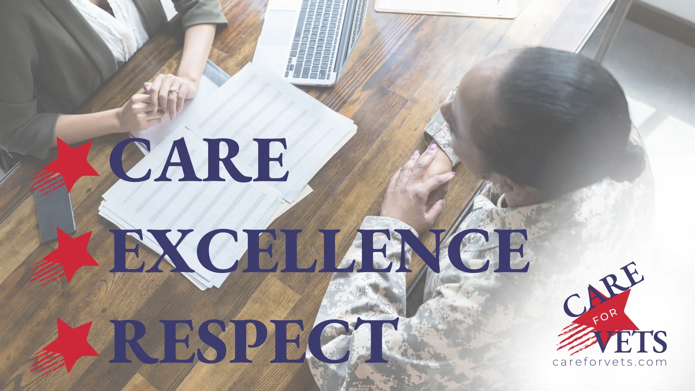

The mission is changing. The values are not.
CareForVets began with a focus on veteran employment and staffing. Its next chapter applies the same founding principles—Care, Excellence and Respect—to veteran-centered healthcare.
Veterans deserve systems that recognize what service taught them—and what bureaucracy can cost them.
The original CareForVets model was created to connect veterans with opportunity while respecting the skills and experience they brought from military service. As the brand evolves into healthcare, the commitment remains personal, practical and outcomes-focused.

Three words that should be visible in the work.
Care
Respect service, independence and choice. Make communication human and reduce unnecessary friction.
Excellence
Use disciplined processes, clear ownership, measurable follow-through and evidence rather than assumption.
Respect
Honor veterans' time and expertise. Protect privacy, dignity and the right to understand or decline care.
One connected identity. Distinct responsibilities.
CareForVets
Public-facing veteran care and navigation brand.
CareForVets Ops
Internal operating and compliance command center.
CareForVets Home Health
Planned provider identity, subject to final legal naming, licensure and approvals.
CareNova Solutions
Separate healthcare consulting and technology strategy business; not the CareForVets clinical provider.